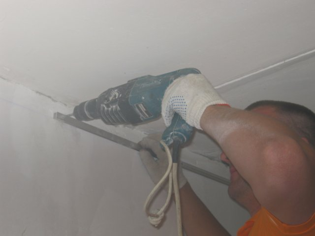
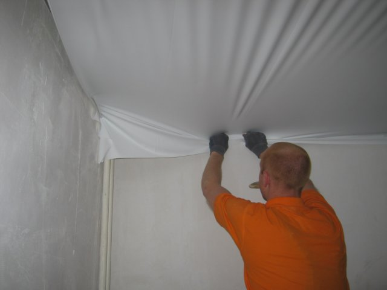
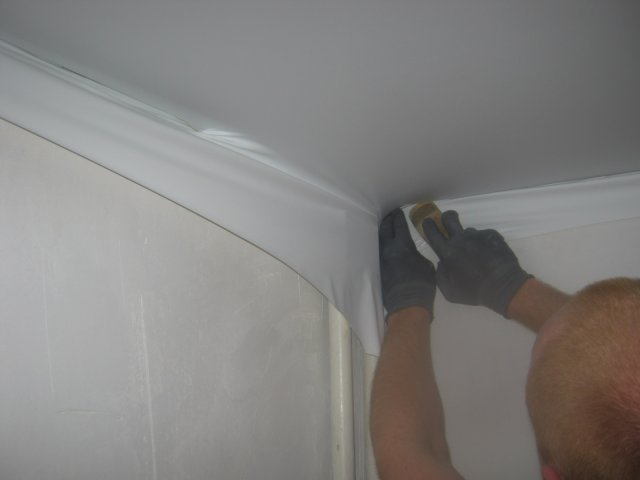
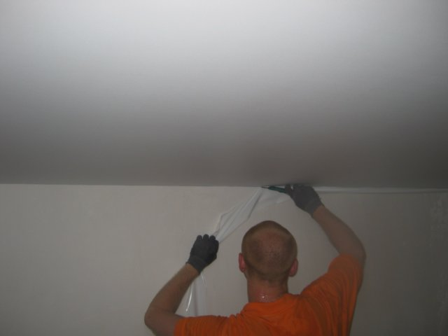

Установка натяжного потолка
   
У многих возникает вопрос, на какой стадии ремонта производить установку натяжных потолков. Компании, занимающиеся натяжкой навесного потолка, советуют делать это по окончанию ремонта, когда все отделочные работы уже завершены. Но это не совсем там, большинство этих самых компаний никак не связаны со строительством и отделочными работами. В свою очередь организации, которые представляют все виды отделочных работ, выделяют два этапа для монтажа натяжных потолков.
Вариант №1
Монтаж потолка производится определенной вставкой, а не на всю площадь помещения. Сначала монтируется выбранная вами форма гипсокартонной конструкции, внешний вид может быть квадратный, овальный, круглый и не только, все зависит от вашей фантазии. Далее все шпаклюется и краситься. А затем уже в ее середину устанавливается сам натяжной потолок. Если вам по вкусу такой вариант, то монтаж потолка рекомендуется производить только по окончанию работ основного потолка.
Вариант №2
Потолок устанавливают на всю площадь данного помещения. Тут уже несколько вариантов:
- 1.После того что как вы закончите весь свой ремонт под 100%, у вас будут готовы не только все отделочные работы, но и наклеены обои. При всем этом, хочется заметить, что натяжной потолок монтируется в пластиковый или алюминиевый профиль, который в свою очередь, крепиться к стене. Отверстие, которые будут производиться перфоратором, через каждые 10-15 см по всему периметру будет оставлять за собой серую пыль на ваших обоях. Что согласитесь не очень приятно! Так вот если у вас керамзитобетонные или бетонные стены, пыль будет светлая, что не решает общей проблемы, ну а если стены кирпичные, следовательно, пыль будет красного цвета.
- 2.После того как вы поклеите обои начнется установка натяжного потолка. После завершения всех работ вы увидите некую технологическую щель между самим потолком и стеной. Это щели не избежать в любом случае. Размер такой щели зависит, прежде всего, от крепления которые используются компанией устанавливающая вам натяжной потолок. Компания « Комфорт» использует пластиковый багет, т.к. он имеет хорошую гибкость с учетом того что у большинства клиентов обратившиеся в нашу компанию, стены не являются ровными. Так же он по своим качествам и силе удерживания ПВХ ткани не чем не уступает других предлагаемых креплениям, но при закупке данного пластикового крепления он обходится гораздо дешевле, что отражается и на конечной стоимости по установке натяжного потолка для заказчика. Что согласитесь не маловажный фактор.
Так вот после того как натяжной потолок установлен в вашем жилище, щель которая образуется после, не очень красиво смотрится. В таких случаях используется "маскировочная вставка"(небольшая планка) по всему периметру. Что намного улучшает внешний вид вашего потолка в целом.